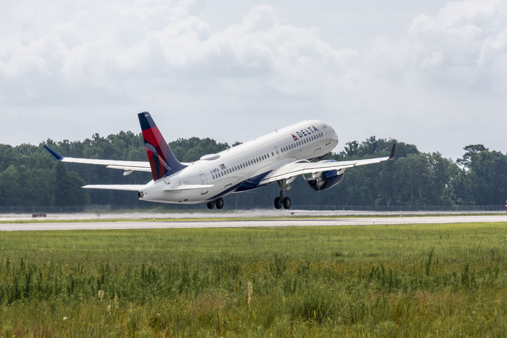

When Boeing tried to destroy a company and it blew up in their face
Commercial
8 March 2021
Since Boeing merged with McDonnell Douglas in 1997, the company has been struggling. Since its inception, the Boeing Company has functioned as a group of engineers, who cared about the safety and quality of their airplanes, rather than the money they could make from them. That changed when Boeing and McDonnell Douglas merged, where the executives from McDonnell ended up becoming the executives of the combined company. With new leadership, and headquarters relocated from Washington to Chicago, Boeing began to deteriorate.
For one, the sheer distance between Boeing's main site in Renton and their corporate offices in Chicago made it very difficult for effective communication. The toxic culture from McDonnell soaked into Boeing, where the engineers faced pressure from management, and all corporate cared about was how much money they could make. This leads to engineers cutting corners and implementing workarounds instead of solving problems (see: 737 MAX). However, a bigger problem was that Boeing stopped playing fair.
The aerospace industry has always been rather competitive, and traditionally, companies competed by building ever better and more efficient products than their competitors. However, Boeing decided that they would play dirty.
An Air Baltic A220-100/CS100. Air Baltic was one of the first customers of the CS/A220.
The flight deck of the CS/A220 features some of the newest available technologies, making operations safer. Photo via Airbus.
When Bombardier began the C-Series program in 2008, they aimed to create an efficient, next-generation airplane that would serve the small mid-range operations market. It was to be bigger than a regional jet, but smaller than say, a 737 or A320. For example, Delta uses it on routes such as JFK-Fort Myers; Detroit to Austin, Seattle to Portland, etc. These are routes where the demand is reasonable, but not huge; it would be very cost efficient to fly the C-Series, rather than a 737 with empty seats.
The C-Series is really a great plane - even the Airbus CEO gave it his approval. Passengers who fly on it enjoy the large windows, large overhead bins (no more gate checks!), and the quiet cabin. The flight deck is fitted with the newest technologies, and the plane itself is very fuel efficient - a key feature for airlines. Boeing knew all of this too.
The issue with the C-Series is that its development took a long time, and it was full of delays and unexpected costs. Bombardier was struggling by the time it could start delivering it to airlines. Delta Air Lines and Bombardier reached an agreement to order seventy five CS100s, but each at a cost of fourteen million dollars below the production cost. Boeing, in turn, accused Bombardier of "dumping" the jets, which they argued caused damage to Boeing. They tried to impose a large tariff on the aircraft to prevent Delta from buying them.
Boeing tried to lobby Washington, being one of the largest and most important companies in the United States. The Department of Commerce agreed to impose a 300% tariff on the C-Series, but the International Trade Commission ruled against it. The tariff would have driven Bombardier into the ground and Delta would not be able to purchase the aircraft. Boeing was understandably upset, but they chose not to appeal the decision.
Soon after, Airbus decided that they would be buying 51% of the C-Series program upfront. They rebranded the aircraft to the Airbus A220 (its current official name) and continued ahead with Bombardier's planned production facility in Mobile, Alabama. This was huge.
A Delta Air Lines A220-300/CS300 taking off from Mobile, Alabama. Photo © Tad Denson via Airbus.
Before this, neither Boeing nor Airbus had any aircraft that could compete in the market for a similarly sized aircraft as the C-Series. Most routes at this capacity were being served by regional airlines using Embraer 175 and Embraer 190 aircraft. Now that Airbus has the A220, their aircraft can serve a wide range of routes for any airline, giving it a huge edge in its never ending competition with Boeing.
Faced with competition, Boeing could have taken the opportunity to innovate, to create a new, better, more advanced aircraft, and to ultimately do what they used to do best - build good airplanes. Instead, the greed and finance-first mindset they inherited from McDonnell Douglas bit them again.
References and Further Reading
- Dong, Chris. "Delta's Full List of Airbus A220 Routes". Point Me to the Plane, 2020. https://pointmetotheplane.boardingarea.com/delta-a220-routes-list/#The_Full_Delta_A220_Routes_List
- Frost, Natasha. "The 1997 merger that paved the way for the Boeing 737 Max crisis". Quartz, 2020. https://qz.com/1776080/how-the-mcdonnell-douglas-boeing-merger-led-to-the-737-max-crisis/
- Garcia, Marisa. "Airbus Marks Competitive Advantage Of A220, Labels Boeing/Embraer Deal “Collateral Damage” Of Coronavirus". Forbes, 2020. https://www.forbes.com/sites/marisagarcia/2020/04/29/airbus-marks-competitive-advantage-of-a220-labels-boeingembraer-deal-collateral-damage-of-coronavirus/
- Gates, Dominic. "In fight over Bombardier CSeries, Boeing loses friends as well as tariff case". The Seattle Times, 2018. https://www.seattletimes.com/business/boeing-aerospace/trade-panel-rejects-boeings-case-against-bombardier/
- "History undermines Boeing claim of C Series impact: analysis". Leeham News and Analysis, 2017. https://leehamnews.com/2017/12/22/history-undermines-boeing-claim-c-series-impact-analysis/
- Irving, Clive. "How Boeing Tried to Kill a Great Airplane—and Got Outplayed". The Daily Beast, 2019. https://www.thedailybeast.com/how-boeing-tried-to-kill-a-great-airplaneand-got-outplayed
- Josephs, Leslie. "Boeing loses trade case over Bombardier passenger jets". CNBC, 2018. https://www.cnbc.com/2018/01/26/boeing-loses-trade-case-over-bombardier-passenger-jets.html
- Nunes, Ashley. "Bombardier just bested Boeing in a trade dispute between the U.S. and Canada. Here's what you need to know." The Washington Post, 2018. https://www.washingtonpost.com/news/monkey-cage/wp/2018/01/29/bombardier-just-bested-boeing-in-a-trade-dispute-between-u-s-and-canada-heres-what-you-need-to-know/
- Ostrower, Jon. "Canada's Bombardier wins big over Boeing in trade dispute". CNN Business, 2018. https://money.cnn.com/2018/01/26/news/companies/bombardier-boeing-itc-vote-harm-ruling/index.html
- Useem, Jerry. "The Long-Forgotten Flight That Sent Boeing Off Course". The Atlantic, 2019. https://www.theatlantic.com/ideas/archive/2019/11/how-boeing-lost-its-bearings/602188/
- Zhang, Benjamin. "Boeing started a trade dispute with Canada, but Airbus and Alabama ended up being the winners". https://www.businessinsider.com/boeings-trade-dispute-canada-bombardier-airbus-alabama-winner-2019-1